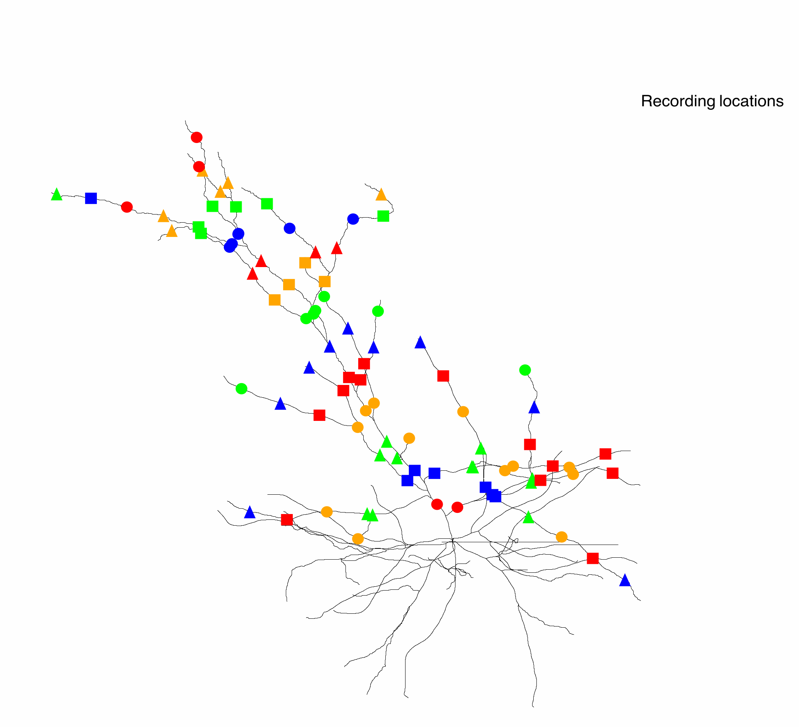

This document describes how to interactively run the model that was
used in the paper
Chiayu Q. Chiu*, Thomas
M. Morse*, Karima AitOuares, Lauren C. Panzera, Paras A. Patel,
Francesca Nani, Frederic Knoflach, Maria-Clemencia Hernandez, Monika
Jadi, Michael J. Higley (2026) SST interneurons facilitate dendritic calcium signaling via tonic
activation of alpha5-GABA receptors Neuron
If instead you would like to regenerate the figures in the paper
please consult the readme.html
After installing NEURON, compile the mod files in this archives root
folder with
nrnivmodl mod_files
To run interactively
python3 -i tonic_GABAAR_distal.py
The default tonic GABAA receptors are distributed at a constant
density throughout the dendrites however we also explored distal
and upward ramp distributions (hence the name distal in the script
name). There were similar results with those alternative distributions
in this model (not shown).
It takes 30 seconds to run, first in the control and then in the
blocked condition. Note that a distal or constant tonic GABAA
receptor distribution can be selected by setting the "distribution"
variable circa line 66 in configure_sim.py which creates the
tonic_GABAR_gbar.py. See code and below for details. Note (that
running) the tonic_GABAAR_distal.py script is the main way
vector (time-series) results (voltages, currents, conductances,
etc.) are generated (the calcium suppression figure also relies on
it). After the model has run, to interactively turn tonic GABAARs
off, then (presumably after running or exploring some feature), back
on at a constant, or alternatively distal distribution type at the
NEURON-python prompt:
set_tonic(0)
g_region('d', 'exGABALeak', tonic_GABAAR_gbar) to set a constant distribution
or
g_piecewise_linear('d','exGABALeak', 200, tonic_GABAAR_gbar, 378.5, tonic_GABAAR_gbar)
or
g_piecewise_linear('d','exGABALeak', start_loc, tonic_GABAAR_gbar, end_loc, tonic_GABAAR_gbar)
Note that tonic_GABAAR_gbar is set to (a) default conductance of the
GABAAR channels and after tonic_GABAR_distal.py is run you can
access the V's, ica's, and cai's from the session_record dictionary
which holds these elements in a dictionary that has keys of
conductance state ('blocked' or 'control') of the constant or distal
tonic GABAA Receptor (tGAR) maximum conductance and the distance to
a dendritic location, and values of lists of voltage vectors
recorded under those conditions. The names of the locations are
stored in dendrite_names[distances]. Other session_record dicts have
the time series of the quantities indicated in their names and have
the same keys as the above described voltage dict. Here is a
complete list of them: bAP_stimulation_session_record
cai_session_record g_hva_session_record g_lva_session_record
h_hva_session_record h_lva_session_record ica_hva_session_record
ica_lva_session_record m_hva_session_record m_lva_session_record
session_record. Note that soma_v_session_record and
soma_AP_t_session_record also exist, with only the tonic GABAA
Receptor status ('blocked' or 'control') key.
generate LVA
and HVA Ca channel kinetics traces
interactively
If you want to examine the kinetics of channels
manually, the states_times.py module can be used. For example to see
the ion channel kinetics you can start an example run like:
python3 -i tonic_GABAAR_distal.py
and then after a short time it will stop and you can type on
the python command line:
from plot_states_times import *
and plots of model ion channel kinetics will be displayed.
recording locations
To generate a figure of the 25um spaced voltage and calcium
recording locations in the apical dendrites run:
python3 -i recording_location_plots.py
Then save the image as a ps (Print to postscript in NEURON's Print & File Window Manager) to convert to other formats:
